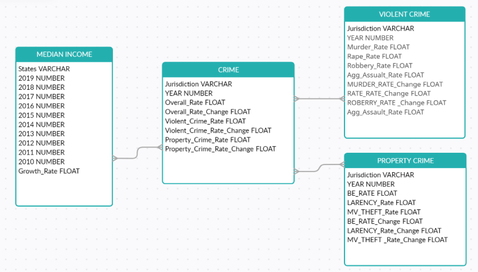

Information Visualization
18CSE301J
Afraz Tanvir
RA2011003010499
Introduction
This Data set is taken from Data.gov and Wikipedia. The data on Data.gov is compiled by the US Federal Government In 2015, the US Government made all its data publicly available on Data.gov. The median income dataset of U.S.A is obtained through web scrapping on Wikipedia.
Dataset Description
The crime data set shows the crime rate of all US states. The data is provided are the Maryland Statistical Analysis Center (MSAC), within the Governor's Office of Crime Control and Prevention (GOCCP). MSAC, in turn, receives these data from the FBI's annual Uniform Crime Reports. The data set covers the crime data of all 50 Us states over the course of 14 years from 2006 to 2019.
The median income dataset consists of all 50 US states median income over a period of years. Our objective is to make inferences from the data and identify the relation between the median income of a state and crime in that state. This data is scrapped from Wikipedia.
Dataset Schema
Tableau Assignment
Visualizing Violent Crimes in U.S. Dataset using Tableau.